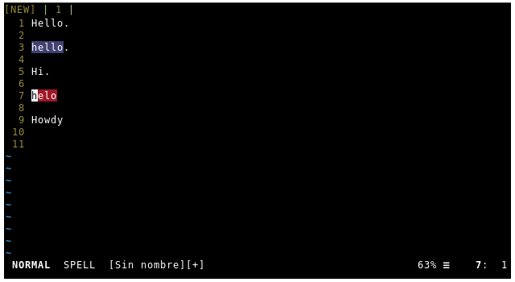
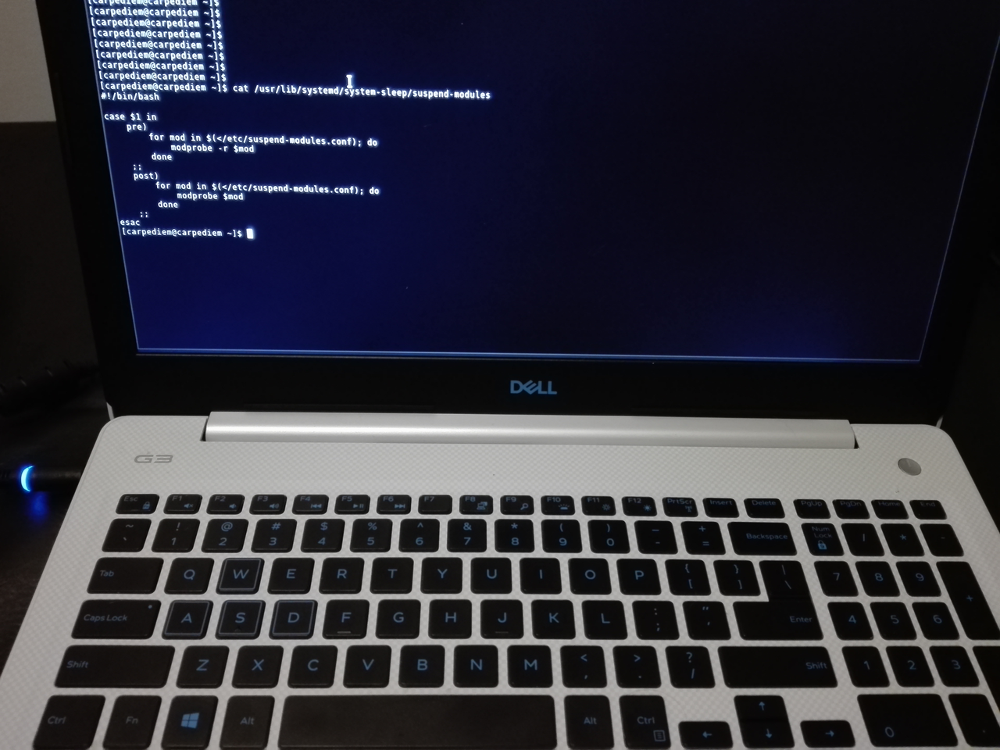
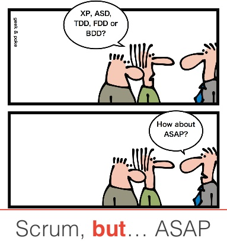

Corrector ortográfico para Vim
Los que me conocen, o trabajaron conmigo saben que me gusta mucho la consola, ya que me resulta más cómodo y rápido para trabajar. Y además utilizo vim para programar.
Cuando comence a probar nikola para el blog, me gusto la idea de poder escribir los posts en vim, pero me resultaba tedioso revisar si me faltaba algun acento, o si se pasaba alguna falta de ortografía.
Así fue como llegue a esta funcionalidad de vim :)
Spell
El soporte para el corrector ortográfico se agrego en Vim 7.
Problemas con Notebook Dell (Extraño la Thinkpad)
Hace un tiempo tuve que comprar una nueva notebook. Mi Thinkpad T430 ya estaba bastante obsoleta.
Por un tema de precios, tuve que desistir que seguir con la línea de Lenovo, y opte por una Dell (Dell G3)
Instale Archlinux y lo configure como siempre, y aunque tuve algunos problemas que solucionar por la compatibilidad de Dell con linux (Por ejemplo, la placa de video), había un solo problema que me volvía loco, que era cuando cerraba la notebook y pasaba a estado sleep.
El problema es que al "despertarla", el touchpad no respondía. Encontré que volviendo a cargar el módulo i2c_hid volvía a funcionar
ScrumBut, pero peor (Mucho peor)
Hasta hace unos meses participe de un proyecto bastante grande. El proyecto era para un cliente de Estados Unidos, donde uno de los socios era nativo y el otro era un Argentino viviendo allá desde hace unos cuantos años.
Estuve trabajando unos 2 años desde Argentina, de manera freelance y mi contacto diario era con el Argentino (Product Owner).
El proyecto desde que empece hasta que me fui, tenía cambios radicales cada 2 meses, nunca estuvo definido hacia donde íbamos, y se iba definiendo sobre la marcha.
Esto lo hacia un proyecto perfecto para implementar Scrum, ya que era un sistema complejo, donde equivocarnos temprano era lo mejor que nos podía pasar, podríamos haber tenido un crecimiento orgánico y salir a producción rápido.
Utilizamos Scrum, pero mal, muy mal. Scrum te hace ver los problemas en los procesos, hacen que salgan a la luz, y esto es lo bueno del framework, ya que te da la posibilidad de corregirlos a tiempo. Pero en este caso no fue así, donde se visibilizaban los problemas, se optaba por modificar el framework (de ahí ScrumBut).
Estos son algunos de los problemas que identifico en mi propia retrospectiva post-proyecto...
PyCon-Ar 2014
Paso otra PyCon en Argentina, la sexta. Esta vez fue en Rafaela, Santa Fe.
Llegamos el Jueves a la tarde, por lo que ese día solo participe del sprint de la nueva web de pyar. Hice unos commits, pero no hubo mucho tiempo como para poder aportar mas.
El Viernes y Jueves fueron de charlas. Entre las que más me gustaron estan:
- Tu propio cliente de Torrent streaming en Python (Por Felipe Lerena y Gilgameth)
- Django Security quick-wins (Por Andrés Riancho)
- Prediciendo el mundial con inteligencia artificial (Por Juan Pedro Fisanotti)
Incursionando en los embutidos
Una de las tantas cosas que me gusta hacer como pasatiempo es cocinar, y hace mucho tiempo que tenia ganas de empezar a probar con los fiambres caseros.
Busque un poco en Internet, y encontré la bondiola, la cual parece ser uno de los embutidos más fáciles para hacer.
La hice, y salio muy bien, Así que ahora tengo ganas de hacer otros embutidos como Jamón Crudo y Quesos, y obviamente, otra bondiola, porque ya la comimos.